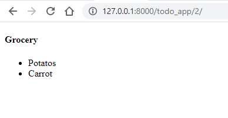
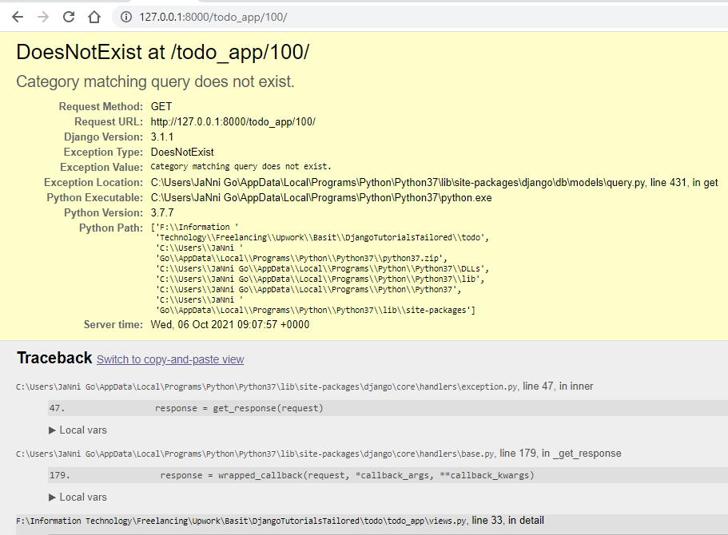
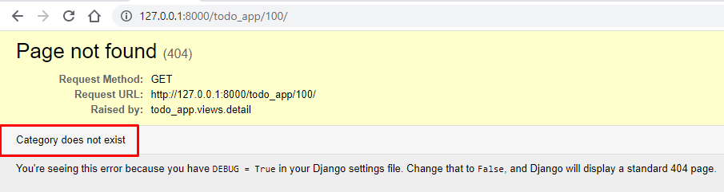
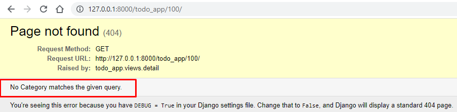

Details Templates:
Currently we are listing all the categories that are present in our database. Now we are going create a template that show all the item on a specific Category.
Create a new html file named details.html> inside todo/todo_app/templates directory. Add following code:
todo/todo_app/templates/details.html
<h4>{{category.name}}</h4>
<div>
<ul>
{% for item in category.item_set.all %}
<li>{{ item.name }}</li>
{% endfor %}
</ul>
</div>
In above code, we are using django built-in function _set.all in
category.item_set.all which will select all the associated item to
current Category.Now python code for template is written. Let move to the logic side. So, open todo_app/views.py and define a new view called details() by adding following code:
todo_app/views.py
def detail(request, id):
category = Category.objects.get(id=id)
return render(request, 'details.html', {'category': category})
Here the detail() function is accepting two parameters. First one is default request which we explain in our last section. Second is id which represent id of Category model.
The view is selecting a Category object based on the id passed from the URL. Now that we have created our view lets create a URLconf that maps the view to a route path. Open
todo_app and append following line of code inside urlpatterns list:
todo_app/urls.py
path('<int:id>/', views.detail, name='detail'),
This url pattern will accept an id and pass it to the mapped view automatically.
Now goto localhost:8000/todo_app/ and click on any Category name. You will be redirected to a
page that contains the Items associated with that Category. Your will see below results.
Browser: Category Item List (http://127.0.0.1:8000/todo_app/2)

Now to cover the Result not Found case, we have options to implement Raising 404 or use get_object_or_404(). Sometimes the specified id in the url may not exist in database in that so Both mentioned techniques are used to overcome this issue showed in below screenshot.
Browser: Category Item List (http://127.0.0.1:8000/todo_app/100)

Raising 404
In case we need to raise 404 error which represent NOT FOUND error. You can try that by hitting localhost:8000/todo_app/100/
in your browser. In that case instead of showing programmatic it is good to show 404 error.
Browser: Category Item List (http://127.0.0.1:8000/todo_app/100)

To implement the above case, open todo_app/views.py and edit the details view like:
todo_app/views.py
from django.http import Http404
def detail(request, id):
try:
category = Category.objects.get(id=id)
except Category.DoesNotExist:
raise Http404("Category does not exist")
return render(request, 'details.html', {'category': category})
A shortcut: get_object_or_404()
The above method of raising 404 is good. But instead of implementing a try except block django
provides us with a build in function that will automatically raise 404 if the specified object
is not found.
Browser: Category Item List (http://127.0.0.1:8000/todo_app/100)

To implement that open todo_app/view.py and update the details view with following code:
todo_app/views.py
from django.shortcuts import get_object_or_404, render
def detail(request, id):
category = get_object_or_404(Category,id=id)
return render(request, 'details.html', {'category': category})